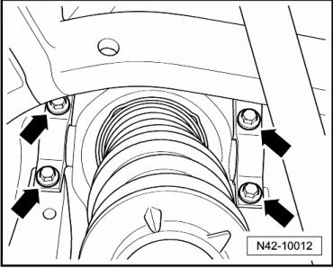
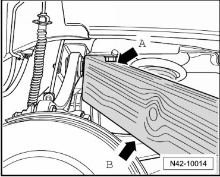
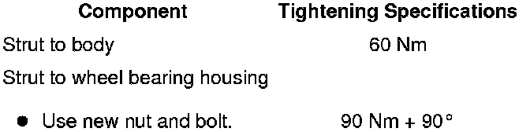

Strut
Strut
Removing
CAUTION!
Before starting work, stabilizer bars must be coupled in vehicles with separable stabilizer bars. Otherwise, there is the danger of injury caused by unintentional separation.
- Remove strut - arrows - bolts.

- Insert a wood block between underbody - arrow A - and upper control arm - arrow B -.

This is needed to press down wheel bearing housing.
- Remove nut - arrow -.

- Using a wood block, press down wheel bearing housing far enough to remove bolt - arrow -.
- Remove strut.
Installing
Installation is performed in the reverse order of removal.
Tightening Specifications
